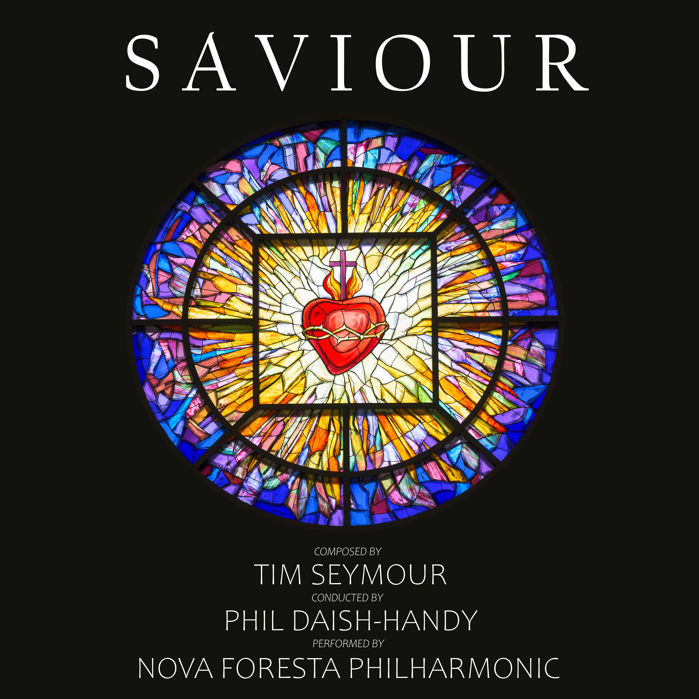

"For string orchestra and piano. A 17-track soundtrack inspired by each stage of the human spiritual journey from birth, sacrifice, through to immortality."

Saviour for string orchestra and piano is the debut classical album composed by New Forest based composer Tim Seymour.
The album was recorded at St Saviour's Church in Brockenhurst on the 9th & 10th August 2024 and was released on Easter weekend, 18th April 2025.
Conducted by Phil Daish-Handy, the recording features solos from renowned cellist Lionel Handy, violinist Catherine Lawlor and pianist Dr Robert Markham, with accompaniment by Lymington's premier orchestra, the Nova Foresta Philharmonic.
Featuring 17 tracks over 56 minutes, the album had its live premier on 1st Nov 2025 in St Thomas Church, Lymington, performed by the same musicians who feature on the recording.